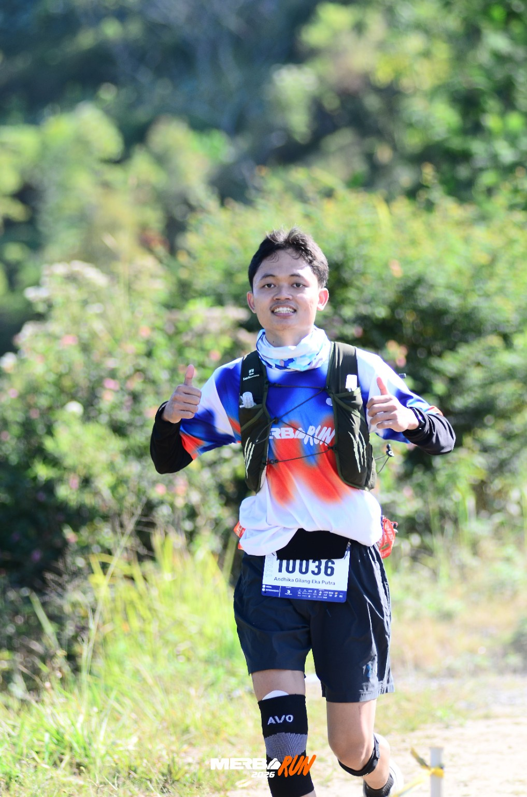

1
Sekolah Menengah
SMA NEGERI COLOMADU
2021-2024WEBSITE PROFIL MAHASISWA
Mahasiswa Program Studi D4 Elektromedis

Saya merupakan mahasiswa Program Studi D4 Elektromedis yang memiliki ketertarikan terhadap teknologi alat kesehatan, elektronika, dan pemrograman.
Saya senang mempelajari hal-hal baru serta mengembangkan kemampuan dalam melakukan pemeliharaan, pemeriksaan, dan troubleshooting peralatan elektromedis.
SMA NEGERI COLOMADU
2021-2024Universitas Muhammadiyah PKU Surakarta
Program Studi D4 ElektromedisMemahami dasar rangkaian dan komponen elektronika.
Mempelajari prinsip kerja dan penggunaan peralatan elektromedis.
Mempelajari HTML, CSS, MATLAB, dan pemrograman dasar.
Memiliki minat dalam pemeriksaan dan pencarian kerusakan alat.
1202405019@students.itspku.ac.id
085774388732
Jl. Raya Colomadu No. 123, Colomadu, Karanganyar